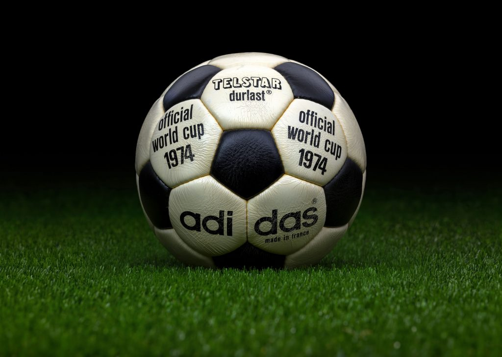

Modern rules are created
The Football Association was formed in England and wrote a standard set of rules. This helped separate association football from other games such as rugby.
Follow some of the important moments that helped soccer become the world's most popular game.

A short history
Soccer developed over many years. These ten moments show how its rules, organizations, tournaments, players, and technology changed the sport from the beginning of the modern game to 2026.
The Football Association was formed in England and wrote a standard set of rules. This helped separate association football from other games such as rugby.
Wanderers defeated Royal Engineers in the first FA Cup Final. The competition helped clubs from different places play against each other in an organized tournament.
The four British football associations created The International Football Association Board. The organization became responsible for protecting and updating the Laws of the Game.
Representatives from seven national associations created FIFA in Paris. The organization helped countries work together and organize international soccer.
Uruguay hosted the first men's FIFA World Cup. Thirteen teams competed, and Uruguay defeated Argentina in the final to become the first champion.
Yellow and red cards were introduced at the World Cup in Mexico. The tournament also allowed substitutions, helping soccer become closer to the modern game.
China hosted the first FIFA Women's World Cup. The United States defeated Norway in the final, helping women's soccer gain a larger international audience.
Video assistant referee technology was used at the men's World Cup for the first time. Referees could review video for important decisions during matches.
Australia and New Zealand hosted the first Women's World Cup with 32 national teams. Spain won the tournament, which set new attendance and audience records for women's soccer.
Canada, Mexico, and the United States co-host the first men's World Cup with 48 national teams. Its 104-match format makes it the largest edition of the tournament to date.